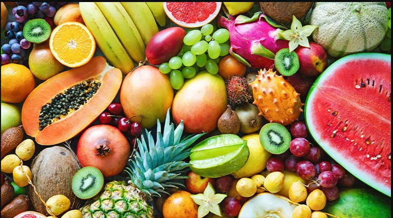
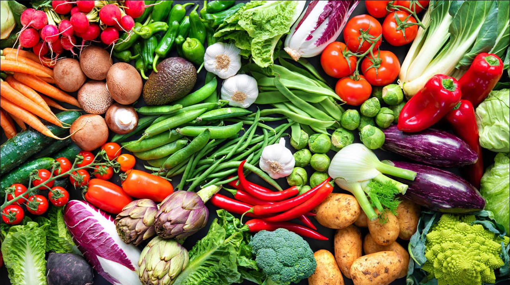
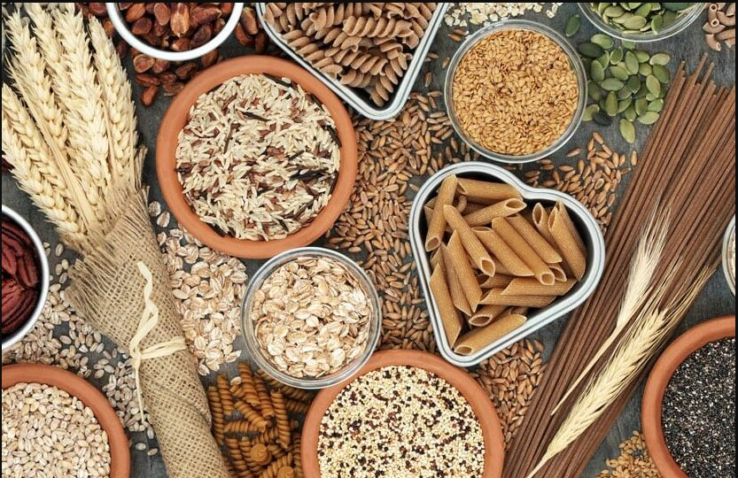
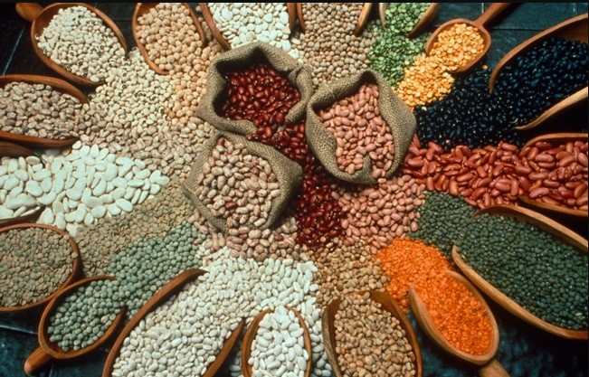
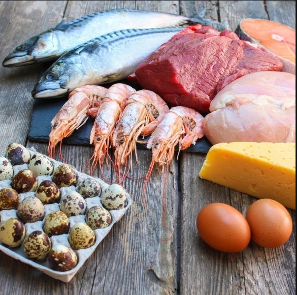
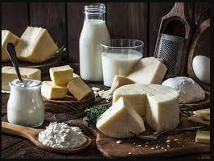

https://www.gob.mx/promosalud/es/articulos/que-es-la-alimentacion-saludable?idiom=es
| Tipo de alimento | Ejemplos | Imagen |
|---|---|---|
| Frutas | Fresa, manzana, pera, sandía, plátano, melón, uvas, kiwi, durazno, mango, naranja, mandarina, piña |  |
| Verduras | Jitomate, papa, cebolla, zanahoria, acelgas, verdolagas, espinacas, calabaza, chayote, nopales, brócoli, coliflor, betabel, chile |  |
| Cereales | Arroz, maíz, trigo, cebada, avena |  |
| Leguminosas | Alfalfa, chícharo, garbanzo, habas, ejote, frijoles, lentejas, maní, semillas de girasol |  |
| Origen animal | Carne de res, pollo, cerdo, huevos, pescados, mariscos |  |
| Leche y sus derivados | Leche, crema, yogurt, mantequilla, embutidos |  |
Una alimentación saludable nos ayuda a tener un buen estado de salud, a sanar o realizar procesos de recuperación, acombatir enfermedades e infecciones y a evitar enfermedades crónicas degenerativas causadas por la obesidad.
Si bien, todos tenemos necesidades diferentes de nutrición, lo que es igual para todos es tener hábitos de alimentación quefavorezcan nuestra salud y la de toda nuestra familia. La preparación de los alimentos debe ser higiénica, es mucho mejorpreparar los alimentos en casa y si es posible comer en compañía de la familia o amigos para poder disfrutar ese momento.La dieta debe de ser variada y suficiente. Respecto a esto, en los siguientes blogs te mostraremos cuáles son las porcionesadecuadas para comer lo que tu cuerpo necesita.
Debemos aprovechar también los alimentos regionales en donde vivimos y los de cada estación ya que eso también nosayudará a tener una alimentación variada y económica.
Otra cosa importante es incluir en las comidas principales (desayuno, comida, cena) todos los grupos de alimentos,consumiendo más verduras, debido a que nos dan satisfacción y contienen fibra, agua, vitaminas y elementos inorgánicos(minerales).
https://www.gob.mx/promosalud/es/articulos/que-es-la-alimentacion-saludable?idiom=es